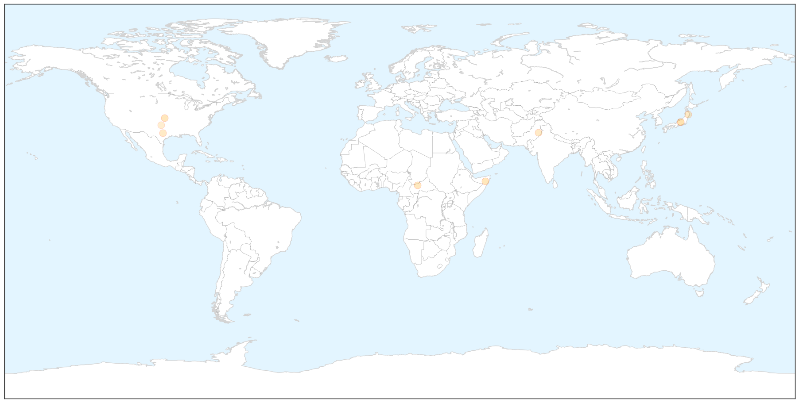
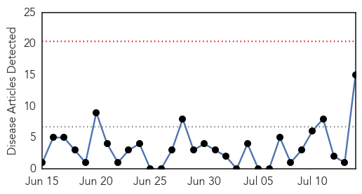
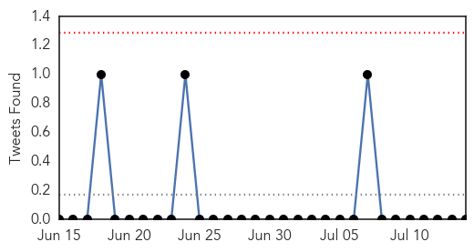
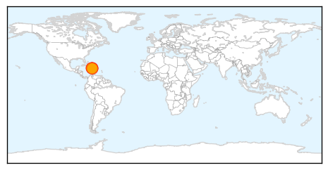

Measles
30-Day Web Trend
0 alerts, 0 warnings

30-Day Twitter Trend
0 alerts, 0 warnings

Article Locations

X

Article Confidences

Top Articles:
- 0.936
- Four More Cases of Measles Confirmed in Wichita Area
- 0.799
- Somali Children To Be Vaccinated On $1.4M Fund
- 0.788
- UN emergency fund provides $1.4 million to vaccinate Somali children
- 0.752
- Médecins Sans Frontières Ireland
- 0.671
- Health Situation Report #8 - Pakistan: North Waziristan Displacement - Pakistan
- 0.667
- Migrant kids better vaccinated than U.S. kids, but Fox News stokes ‘germ’ fears anyway
- 0.665
- Asia Pacific Region: Weekly Regional Humanitarian Snapshot 8 - 14 July 2014 - Philippines
- 0.556
- Oklahoma lawmaker wants quarantine of migrant children housed in state
Top Tweets:
-
No tweets found for Jul 14, 2014
Cholera
30-Day Web Trend
0 alerts, 0 warnings

30-Day Twitter Trend
0 alerts, 0 warnings

Article Locations
Article Confidences

Top Articles:
- 0.992
- UN chief makes ``pilgrimage`` to Haiti to address cholera crisis
- 0.991
- U.N. chief makes 'pilgrimage' to Haiti to address cholera crisis
- 0.991
- U.N. chief makes 'pilgrimage' to Haiti to address cholera crisis
- 0.991
- U.N. chief makes 'pilgrimage' to Haiti to address cholera crisis
- 0.991
- U.N. chief makes 'pilgrimage' to Haiti to address cholera crisis
- 0.990
- UN Chief Makes 'Pilgrimage' to Haiti to Address Cholera Crisis
- 0.985
- UN chief in Haiti to launch sanitation program
- 0.981
- U.N. chief flies to Haiti to address cholera crisis
- 0.980
- UN chief in Haiti launches sanitation program
- 0.972
- UN has moral responsibility to end Haiti cholera outbreak, Ban says
- 0.968
- U.N. chief makes 'pilgrimage' to Haiti to address cholera crisis
- 0.968
- UN chief arrives in Haiti to launch program to help improve sanitation, combat cholera
- 0.950
- UN has 'moral responsibility' to tackle Haiti cholera - Emirates 24
- 0.845
- UN chief in Haiti launches sanitation program
- 0.724
- United Nations Secretary-General Ban Ki-moon's Statements
Top Tweets:
-
No tweets found for Jul 14, 2014